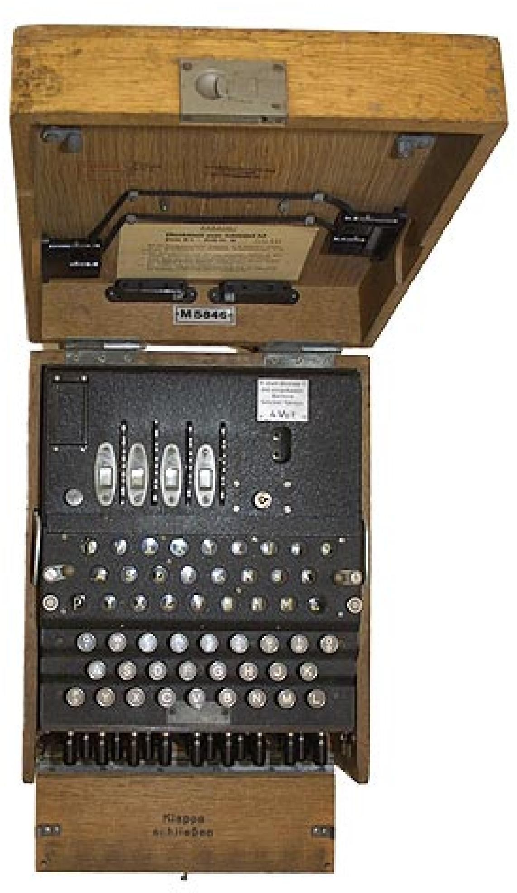
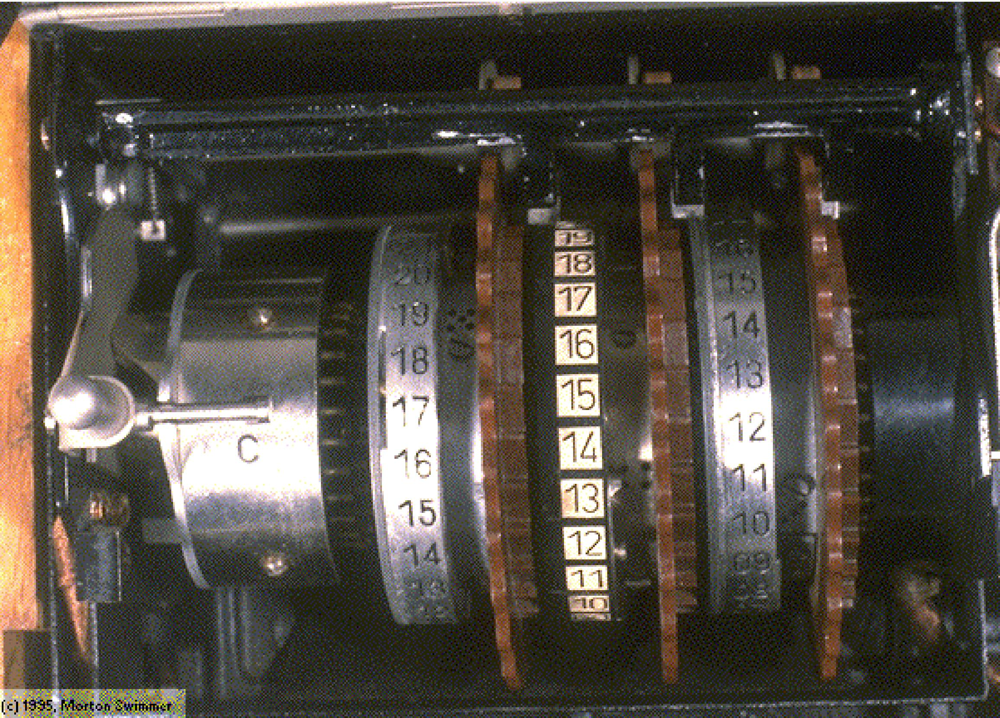
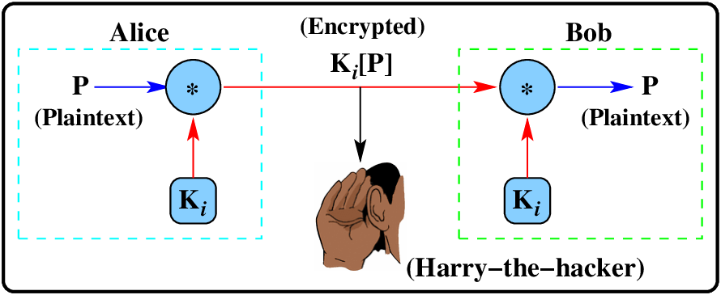
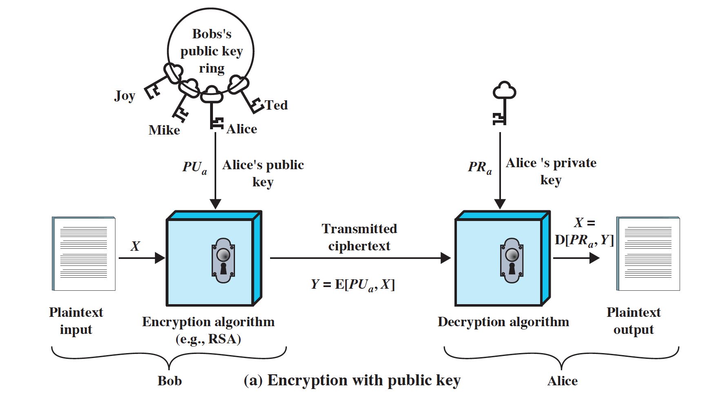
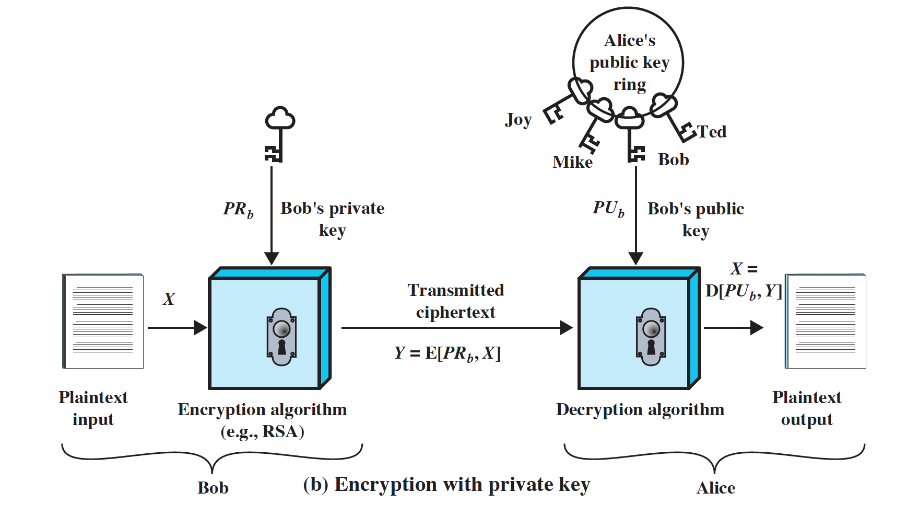

Computational complexity and cryptography
Introduction
In historical times, all sorts of schemes were constructed to provide secrecy, but they mostly relied on making a cryptographic system so complex and confusing that a person could not understand or try out all key possibilities. Nowadays, computers can try a vast number of key possibilities, and these techniques are no longer adequate.
In modern cryptography (as opposed to historical cryptography) we look out for operations that are easy to do one way, say of \({\cal O}(k)\), and difficult to reverse and do the other way: perhaps \({\cal O}(e^{k})\).
Our modern cryptographic systems can be made arbitrarily hard, by using large key sizes, where the enumeration of all the keys, even by a fast cluster of computers, is still too difficult. For example, if we were to use a keysize of 128 bits, then the keyspace is \(2^{128}=340,282,366,920,938,463,463,374,607,431,768,211,456\). To try out all those possible keys, using a cluster of 1,000,000 computers, each able to try 1,000,000,000 keys per second, would take \(10,790,283,070,806,014\) years.
Mathematical systems are used to provide the mechanisms for modern cryptography. The reason for this is we can use mathematical systems that we know work for all sizes of numbers. For example, if we were to use the property that all numbers that are the product of two primes have a unique factorization, we know that this is true for small numbers (because we can check by trying them out), but we also know that it works for big numbers - even if they have thousands of digits - because it has been proved for all numbers, not just the ones we have tried out.
Another common property that we want for our mathematical mechanisms is that we want them to have a limited/fixed size. If our computations could grow arbitrarily, we would need more and more memory to store the results of computations. It is common to use fixed maximum size numbers in the mathematical mechanisms used for cryptography. One class of mathematical systems that has both these properties (i.e. well-defined operations that are limited in size), are the finite fields. Such finite fields have a fixed maximum size (hence the term finite), and by definition, the operations over that field are well defined.
When we do addition and multiplication modulo a prime, the resultant system (values and operations), is well defined, and also finite. This is a first example of a finite field, and it does not matter if the prime is 7, or \(22953686867719691230002707821868552601124472329079\): all the operations work exactly as expected: addition and multiplication modulo a prime is a finite field. In addition, the operation \(g^{a}\bmod p\) is easy to calculate, if \(p\) is a prime and \(g\) and \(a\) are large numbers. However, finding the value \(a\) given \(g\),\(p\) and \(g^{a}\bmod p\) is hard. We know the operations will work correctly, because it is a finite field, and we have a function easy to do one way \({\cal O}(k)\), and difficult to reverse \({\cal O}(e^{k})\), where \(k\) is the number of bits used to represent \(a\). This is the basis of Diffie Hellman Key exchange, an asymmetric scheme used for generating new keys.
Another example is \(C=P+Q\) on a discrete elliptic curve defined over a number field (The + is a funny curve operation which is easy to do). But it is hard to calculate \(P=C-Q\). This is the basis of ECC, Elliptic Curve Cryptography.
Most modern cryptographic schemes are well rooted in well understood structures such as this.
Historical cryptography
Over 2000 years ago, Cæsar (100-44BC) is reputed to have encoded messages to his battalions.
I C L A V D I V S |
|---|
A B C D E F G H I K L M N O P Q R S T V X Y Z |
X Y Z A B C D E F G H I K L M N O P Q R S T V |
F Z H X R A F R P |
He did[^1] this using (what is now called) a Cæsar, or rotation cipher, in which we replace each letter in a message, with another letter, by rotating the alphabet some fixed number of characters. In Cæsar’s original cipher, it was always just a leftwise rotation of 3 characters. We can specify a Cæsar cipher by just noting the number of characters that the alphabet is rotated. The number of different useful ciphers (the key size) is just \(25\) for a \(26\) letter alphabet. We can mathematize a rotation cipher like this:
These days, we would call this a mono-alphabetic substitution cipher, in that we just do a single substitution - every time we see the character A it is translated to an X. If instead, we were to use a number of different substitutions, one after the other, and then repeat until the end of our message, we would have a poly-alphabetic substituion cipher. Early cipher machines, were of this sort.


In the 1920’s, a German company marketed a series of devices for encrypting and decrypting messages. The devices used electro-mechanical rotors to generate what appeared to be random characters from a source message. However a matching device, with a special key, could decode the messages. These Enigma devices were extensively used by the German military to communicate before and during World War II, in the belief that the “random” characters could not be decoded.
If you believe in the movie world (as of course every right-thinking person does), then you may already know that the American Navy captured a German submarine and recovered an Enigma machine and codebook, leading to the allies being able to decode the German messages (the movie U-571). The movie is of course nonsense, but the real story is just as exciting, and does not require the heroes to be good looking and have easily pronounceable names.
Three students from the Department of Mathematics at the University of Poznan were assigned to work on the problem, and by 1933, the Polish Ciphers Office was able to decode messages, although slowly. In 1938, the Germans changed the encoding of the Enigma machines, and the Poles had to develop a machine to decode the new messages. This machine was completed quickly, and the Poles were aware of the date of the imminent invasion of Poland. As a result of this information, Poland delivered working Enigma copies to the English about two weeks before the invasion of Poland. English cryptographers at Bletchley Park, including Alan Turing, developed many systems for decoding encoded German (and other) transmissions. On 9 May 1941 the Royal Navy escort destroyers Bulldog and Broadway captured the U-110 submarine, complete with a genuine Enigma machine, and active code books. From this date on, the English could decode most German military transmissions.
I would like to be able to show you a working Enigma machine, but I do not have a spare $1M on me today, so instead, I show the M209:

The M-209 is a portable, mechanical cipher machine used by the US military primarily in World War II. The M-209 was designed by Swedish cryptographer Boris Hagelin in response to a request for such a portable cipher machine, and was an improvement of an earlier machine, the C-36.
Today...sssshhhh
Today we do the same sort of things, but we use software, which works on blocks of bits, instead of characters. In most modern cryptography, we are not really doing much different from these old ideas, except that we work on bits, not characters, and the size of the problem has changed. Instead of having an alphabet of 26 letters/symbols, we might have an alphabet which consists of a block of bits. If the block bitsize was (say) 128 bits, then we have effectively a substitution cipher for \(2^{128}\) symbols. This change in size is significant - a (brute force) attack on a cryptographic scheme previously might have been possible, but now with huge keysizes, the possibility of a brute-force attack succeeding may be low.
But some things have changed. In 1976 Diffie and Hellman published the paper “New Directions in Cryptography” , which first introduced the idea of public key cryptography. Public key cryptography relies on the use of enciphering functions which are very hard to decipher unless you have a deciphering key. In a public key system, each participant generates a pair of keys \((k_{1},k_{2})\), where either key can be used to encrypt, with the other key being used to decrypt. The keys have the property that you cannot generate one of the keys knowing the other; they are not symmetric. Each participant then publishes one of the keys, keeping the other private. Key \(k_{1}\) is kept secret and used to encrypt a message, key \(k_{2}\) is made public and may be used to decrypt the message.
From the manual pages for ssh, the secure-shell:
The program ssh is for logging into a remote machine and for executing commands on a remote machine. It provides secure encrypted communications between two untrusted hosts over an insecure network. Other connections can also be forwarded over the secure channel. Users must prove their identity to the remote machine using one of several methods depending on the protocol version. The scheme is based on public-key cryptography: cryptosystems where encryption and decryption are done using separate keys, and it is not possible to derive the decryption key from the encryption key.
Moving to modern cryptography
There are only three underlying building blocks used for building modern cryptographic systems in IT security:
-
Symmetric ciphers: where the keys used for encrypting and decrypting are the same, or easily derived from each other.
-
Asymmetric ciphers: where the keys used for encrypting and decrypting are different, and not easily derived from each other.
-
Hash functions: which take a message and produce a check code. Hash functions are quite different from ciphers, in that there is not really a notion of reversing a hashed value. (There is no corresponding unhash function).
A symmetric cipher encrypts a message, with the same key used at both the transmitter and receiver:

An asymmetric cipher looks much the same, but note that the keys are different:

Public key/asymmetric schemes may be used for encrypting data directly. In the figure above, a transmitter encrypts the message using the public key of the recipient. Since the private key may not be generated easily from the public key, the recipient is reasonably sure that no-one else can decrypt the data.

We can also use public key schemes to provide authentication. If one machine wants to authentically transmit information, it encodes using both its private key and the recipient’s public key as seen below. The second machine uses the others public key and its own private key to decode.
One-way functions
To build asymmetric ciphers and systems, it is common to use what cryptographers call one-way functions. These functions are easy to compute the output given some input, but hard to reverse. Not impossible. Hard. Here, “easy” and “hard” might be \({\cal O}(n)\) versus \({\cal O}(10^{n})\).
An example of a one-way function is the discrete logarithm function in which it is relatively easy to calculate \(n=g^{k}\,\mathrm{mod}\,p\) given \(g\), \(k\) and \(p\), but difficult to calculate \(k\) in the same equation, given \(g\), \(n\) and \(p\).
The Diffie-Hellman paper introduced a new technique which allowed two separated users to create and share a secret key. A third party listening to all communications between the two separated users is not realistically able to calculate the shared key.
Consider the participants in the system above. Firstly, it is common to use the names Bob, Ted, Carol and Alice (from the movie of the same name) when discussing cryptosystems. Secondly, we consider the knowledge held by each of the participants. The knowledge held by each of the participants is different.
All participants know two system parameters \(p\) - a large prime number, and \(g\) - an integer less than \(p\), with certain constraints on \(g\). Alice and Bob each have a secret value (Alice has \(a\) and Bob has \(b\)) which they do not divulge to anyone. Alice and Bob each calculate and exchange a public key (\(g^{a}\,\mathrm{mod}\,p\) for Alice and \(g^{b}\,\mathrm{mod}\,p\) for Bob). Ted knows \(g\), \(p\), \(g^{a}\,\mathrm{mod}\,p\) and \(g^{b}\,\mathrm{mod}\,p\), but neither \(a\) nor \(b\).
Both Alice and Bob can now calculate the value \(g^{ab}\mbox{\,\ mod\,\ }p\):
-
Alice calculates \((g^{b}\,\mathrm{mod}\,p)^{a}\,\mathrm{mod}\,p=(g^{b})^{a}\,\mathrm{mod}\,p\).
-
Bob calculates \((g^{a}\,\mathrm{mod}\,p)^{b}\,\mathrm{mod}\,p=(g^{a})^{b}\,\mathrm{mod}\,p\).
And of course \((g^{b})^{a}\,\mathrm{mod}\,p=(g^{a})^{b}\,\mathrm{mod}\,p=g^{ab}\,\mathrm{mod}\,p\): the shared key. Ted has a much more difficult problem. It is difficult to calculate \(g^{ab}\,\mathrm{mod}\,p\) without knowing either \(a\) or \(b\). In the table we show the relative runtimes for cipher operations and solving the discrete logarithm problem.
| Bit size | Enciphering | Discrete logarithm solution |
|---|---|---|
| 10 | 10 | 23 |
| 100 | 100 | 1,386,282 |
| 1,000 | 1,000 | 612,700,000,000,000,000,000,000 |
| 10,000 | 10,000 | 722,600,000,000,000,000,000,000,000,000,000,000,000,000,000,000,000,000,000........ |
The algorithmic run-time of the (so-far best) algorithm for solving the discrete logarithm problem is in
where \(c\) is small, but \(\geq1\), and \(r\) is the number of bits in the number. By contrast, the enciphering and deciphering process may be done in \(O(r)\).
Note that we can calculate expressions like \(g^{x}\,\mathrm{mod}\,p\) relatively easily, even when \(g\), \(x\) and \(p\) are large. The following code shows an algorithm which calculates \(g^{Q}\,\mathrm{mod}\,p\), and never has to calculate a larger number than \(p^{2}\):
c := 1; { attempting to calculate mod($g^{Q}$,p) }
x := 0;
while x<>Q do
begin
x := x+1;
c := mod(c\*g,p)
end;
{ Now c contains mod ($g^{Q}$,p) }
PKI - Public Key Infrastructure
Public key systems are much more useful for secure transactions, due to the difficulty in forging messages unless you know the secret key used to encrypt it. However it requires secure distribution of (public) keys.
PKI is a system of digital certificates, and distribution algorithms to ensure the authority of key pairs. There is no single agreed-upon standard for setting up a PKI.
The company \(\mathrm{VeriSign}^{\circledR}\) is one commercial company which provides a wide range of PKI services. Their software is not publicly available (i.e. not open-source). According to\(\mathrm{VeriSign}^{\circledR}\), they have
... a fully integrated enterprise solution designed to secure intranet, extranet, and Internet applications...
Built on open standards to ensure maximum flexibility, the VeriSign Managed PKI service allows interoperability with virtually any application or device, and is pre-integrated with leading off-the-shelf solutions...
The open standards referred to include the PKCS standard series from RSA, which define many aspects of PKI. For example:
-
PKCS #3: Diffie-Hellman Key Agreement Standard
-
PKCS #8: Private-Key Information Syntax Standard
-
PKCS #10: Certification Request Syntax Standard
RSA (Rivest, Shamir, Adelman)
Another example of a cryptographic one-way function is the function multiply. It is easy to multiply two numbers, and can normally be done in a time proportional to the number of digits in the numbers. However, if you multiply two large primes, and ask someone to factorize the resultant composite number, this is a problem which takes time in the order of the size of the numbers. The largest composite that has been factorized in a challenge had only 320 digits, but you can easily multiply 32000 digit numbers.
This problem is known as the prime factorization problem, and it forms the basis for RSA asymmetric cryptography. Below are outlined the four processes needed for RSA encryption:
To create public key \(K_{p}\):
-
Select two different large primes \(P\) and \(Q\).
-
Assign \(x=(P-1)(Q-1)\).
-
Choose \(E\) relative prime to \(x\). (This must satisfy a condition for \(K_{s}\))
-
Assign \(N=P*Q\).
-
\(K_{p}\) is \(N\) concatenated with \(E\).
To create private (secret) key \(K_{s}\):
-
Choose \(D\): \(D*E\,\mathrm{mod}\,x=1\).
-
\(K_{s}\) is \(N\) concatenated with \(D\).
We encode plain text \(m\) by:
-
Pretend \(m\) is a number.
-
Calculate \(c=m^{E}\,\mathrm{mod}\,N\).
To decode \(c\) back to \(m\):
- Calculate \(m=c^{D}\,\mathrm{mod}\,N\).
Defences
Attackers of cryptographic schemes have various things to try. For example:
-
Can the keysize be reduced, perhaps by convincing systems to use a lower grade of encryption? This is the mechanism used by NSA to spy on HTTPS/SSL connections.
-
Can the key be brute-forced? Can some pre-computation scheme be used, storing the results on a disk?
-
Can the key be predicted? Keys are often generated as needed by generating numbers using pseudo random number generators.
The defences against these attacks are simple:
-
Do not downgrade encryption, or at least warn users if this is happening.
-
Use large sized keys, that are randomly generated, using high quality random number generators. If the key size is huge, neither brute-force, nor pre-computation would be feasible.
-
Perhaps use actual random number generator chips instead of pseudo random number generators.
Historically, there was a human barrier, that limited the size of keys. Now with computers, we have to use much larger keys. A general approach is to use systems in which the use time goes up perhaps by the number of bits in the key \({\cal O}(k)\), but the attack time goes up much faster - perhaps by the actual size of the key \({\cal O}(2^{k})\). Schemes like this can be made arbitrarily hard: still be usable, but with infeasible attack times.
[^1]: Suetonius wrote “... if he had anything confidential to say, he wrote it in cipher, that is, by so changing the order of the letters of the alphabet, that not a word could be made out. If anyone wishes to decipher these, and get at their meaning, he must substitute the fourth letter of the alphabet, namely D, for A, and so with the others”. Note that many Internet sources get this the wrong way around, substituting A for D when encrypting, not decrypting.